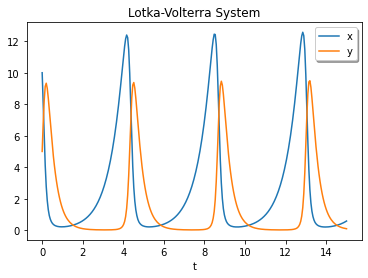

Scipy
Contents
2.3. Scipy¶
import numpy as np
import matplotlib.pyplot as plt
from scipy import integrate, diff, optimize
2.3.1. Differentiation¶
scipy.integrate.solve_ivp¶
Solve an initial value problem for a system of ODEs.
\[ \frac{dy}{dt} = f(t, y), \quad y(t_0) = y_0 \]
scipy.integrate.solve_ivp(fun, t_span, y0, method='RK45', t_eval=None,\ dense_output=False, events=None, vectorized=False, args=None, **options)
from scipy.integrate import solve_ivp
def lotkavolterra(t, z, a, b, c, d):
x, y = z
return [a*x - b*x*y, -c*y + d*x*y]
sol = solve_ivp(lotkavolterra, [0, 15], [10, 5], args=(1.5, 1, 3, 1),dense_output=True)
t = np.linspace(0, 15, 300)
z = sol.sol(t)
plt.plot(t, z.T)
plt.xlabel('t')
plt.legend(['x', 'y'], shadow=True)
plt.title('Lotka-Volterra System')
plt.show()

2.3.2. Integration¶
scipy.integrate.quad¶
Compute a definite integral.
scipy.integrate.quad(func, a, b, args=(), full_output=0, epsabs=1.49e-08, epsrel=1.49e-08,\ limit=50, points=None, weight=None, wvar=None, wopts=None, maxp1=50, limlst=50)
Return y and abserr.
y(float): The integral of func from a to b.
abserr(float): An estimate of the absolute error in the result.
x2 = lambda x: x**2
ans = integrate.quad(x2, 0, 4) # numerical result
print(ans)
print(4**3 / 3.) # analytical result
(21.333333333333332, 2.3684757858670003e-13)
21.333333333333332
2.3.3. Root finding¶
scipy.optimize.root_scalar¶
Find a root of a scalar function.
scipy.optimize.root_scalar(f, args=(), method=None, bracket=None, fprime=None, fprime2=None,\ x0=None, x1=None, xtol=None, rtol=None, maxiter=None, options=None)
find a root of a scalar function
\[f(x) = x^2 - x -1 \]
from scipy import optimize
def f(x):
return x**2 -x - 1
sol = optimize.root_scalar(f, bracket=[0, 3]) # numerical result
print(sol.root)
print((1+np.sqrt(5))/2) # analytical result
1.618033988749895
1.618033988749895
scipy.optimize.root¶
Find a root of a vector function.
scipy.optimize.root(func, x0, args=(), method='hybr', jac=None, tol=None, callback=None, options=None)
def fun(x):
return [x[0] + 0.5 * (x[0] - x[1])**3 - 1.0,
0.5 * (x[1] - x[0])**3 + x[1]]
def jac(x):# Jacbian
return np.array([[1 + 1.5 * (x[0] - x[1])**2,
-1.5 * (x[0] - x[1])**2],
[-1.5 * (x[1] - x[0])**2,
1 + 1.5 * (x[1] - x[0])**2]])
sol = optimize.root(fun, [0, 0], jac=jac, method='hybr')
print(sol.x)
[0.8411639 0.1588361]
scipy.optimize.minimize¶
Local (multivariate) optimization
scipy.optimize.minimize(fun, x0, args=(), method=None, jac=None, hess=None,\ hessp=None, bounds=None, constraints=(), tol=None, callback=None, options=None)
find the minimum point of
\[ f(x,y) = (1-x)^2 + 5(y-x^2)^2 \]
from scipy.optimize import minimize
f = lambda x: (1 - x[0])**2 + 5*(x[1] - x[0]**2)**2
x0 = [-1,-1]
res = minimize(f, x0, method='CG',options={'disp': True})
res.x # solution
Optimization terminated successfully.
Current function value: 0.000000
Iterations: 12
Function evaluations: 84
Gradient evaluations: 28
array([0.9999993 , 0.99999854])
scipy.optimize.least_squares¶
Least-squares
scipy.optimize.least_squares(fun, x0, jac='2-point', bounds=(- inf, inf), method='trf', ftol=1e-08,\ xtol=1e-08, gtol=1e-08, x_scale=1.0, loss='linear', f_scale=1.0, diff_step=None, tr_solver=None,\ tr_options={}, jac_sparsity=None, max_nfev=None, verbose=0, args=(), kwargs={})
# Solve a nonlinear least-squares problem with bounds on the variables.
import os
import scipy.optimize as opt
fitFunc = lambda p,t: p[0]*np.exp(-p[1]*t)*np.cos(p[2]*t)
errFunc = lambda p,t,u: fitFunc(p,t) - u
x = np.linspace(0,5,100)
y = fitFunc([3,0.5,3],x) + np.random.randn(len(x))/3
p0 = [1,1,1]# Initial values
(p,success) = opt.leastsq(errFunc, p0, args=(x,y))
print(p,success)
nfit = fitFunc(p,x)
plt.plot(x,y,label = 'Measured data', color = 'orange')
plt.plot(x,nfit,label = 'fitting curve', color = 'red')
plt.legend()
plt.show()
[3.16797844 0.47384801 3.01772427] 1